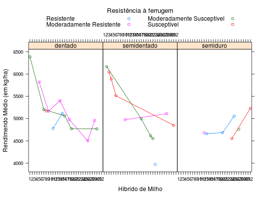
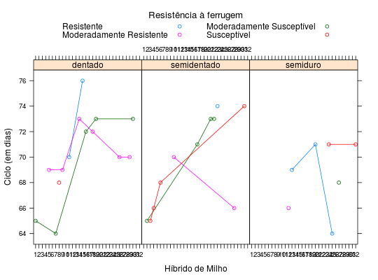
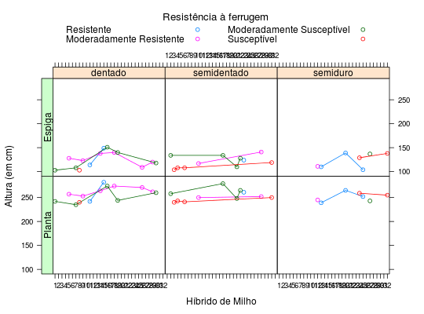
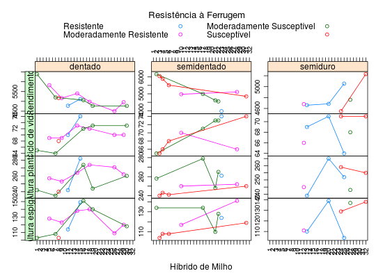
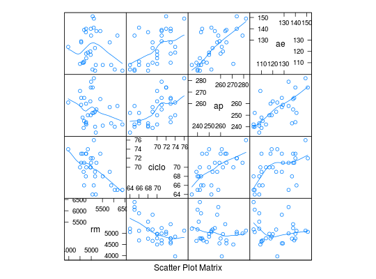

Um pesquisador avaliou, na região de Chapecó, SC, o comportamento de híbridos de milho mensurados pelo rendimento médio de milho, ciclo de vida, altura da planta e altura da espiga.
Um data.frame com 32 observações e 7 variáveis, em que
hibrrmcicloapaegraoresistr: resistente; mr:
moderadamente resistente; ms: moderadamente susceptível; e
s: susceptível.Andrade, D. F., Ogliari, P. J. (2010). Estatística para as ciências agrárias e biológicas com noções de experimentação (2nd ed.). Florianópolis, SC. Editora da UFSC. (Tabela 2.1, pág. 62)
library(lattice) data(AndradeTb2.1) str(AndradeTb2.1)#> 'data.frame': 32 obs. of 7 variables: #> $ hibr : Factor w/ 32 levels "1","2","3","4",..: 1 2 3 4 5 6 7 8 9 10 ... #> $ rm : int 6388 6166 6047 5889 5823 5513 5202 5172 5166 4975 ... #> $ ciclo : int 65 65 65 66 69 68 64 68 69 70 ... #> $ ap : int 242 258 240 243 257 241 235 240 253 250 ... #> $ ae : int 103 134 104 108 128 108 108 103 123 117 ... #> $ grao : Factor w/ 3 levels "dentado","semidentado",..: 1 2 2 2 1 2 1 1 1 2 ... #> $ resist: Factor w/ 4 levels "mr","ms","r",..: 3 3 4 4 2 4 3 4 2 2 ...levels_resist <- c("Resistente", "Moderadamente Resistente", "Moderadamente Susceptível", "Susceptível") # Comportamento do rendimento médio xyplot(rm ~ hibr | grao, groups = resist, type = "b", layout = c(NA, 1), data = AndradeTb2.1, auto.key = list(title = "Resistência à ferrugem", cex.title = 1.1, columns = 2, text = levels_resist), ylab = "Rendimendo Médio (em kg/ha)", xlab = "Híbrido de Milho")# Compartamento do ciclo de vida xyplot(ciclo ~ hibr | grao, groups = resist, type = "b", layout = c(NA, 1), data = AndradeTb2.1, auto.key = list(title = "Resistência à ferrugem", cex.title = 1.1, columns = 2, text = levels_resist), ylab = "Ciclo (em dias)", xlab = "Híbrido de Milho")# Comportamento das alturas library(latticeExtra) useOuterStrips( xyplot(ap + ae ~ hibr | grao, groups = resist, type = "b", data = AndradeTb2.1, auto.key = list(title = "Resistência à ferrugem", cex.title = 1.1, columns = 2, text = levels_resist), ylab = "Altura (em cm)", xlab = "Híbrido de Milho"), strip.left = strip.custom(factor.levels = c("Planta", "Espiga")) )# Comportamento geral vars <- c("Rendimento", "Ciclo de vida", "Altura planta", "Altura espiga") useOuterStrips( xyplot(rm + ciclo + ap + ae ~ hibr | grao, groups = resist, data = AndradeTb2.1, type = "b", as.table = TRUE, xlab = "Híbrido de Milho", ylab = "", scales = list(y = "free", x = list(rot = 90)), auto.key = list( title = "Resistência à Ferrugem", cex.title = 1.1, columns = 2, text = levels_resist) ), strip.left = strip.custom(factor.levels = vars) )# Relação entre as variáveis de interesse splom(~AndradeTb2.1[, c("rm", "ciclo", "ap", "ae")], type = c("p", "smooth"), data = AndradeTb2.1)